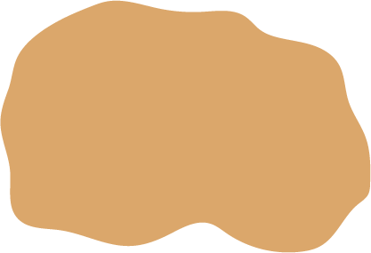
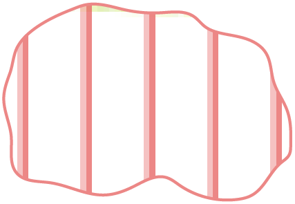
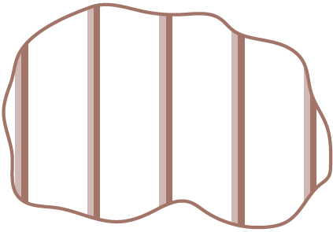
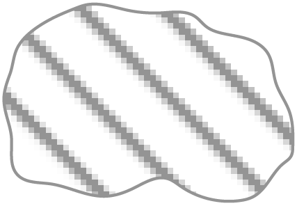
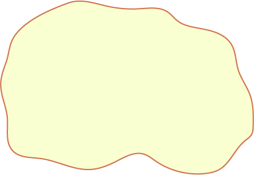

Розселення культурно-історичних спільнот в енеоліті (V–друга пол. IV тис. до н.е.)
Території, заселені носіями культур
Трипільської
| У ранній період (5100-4600 до н. е.) | |
| У середній період (4600-3900 до н. е.) | |
| У пізній період (3900-2900 до н. е.) |
Культур раннього і середнього енеоліту (V - середина IV тис. до н.е.)
| Стогівської | |
| Полгарської | |
| Енеоліту Криму | |
| Києво-Черкаської пізньої | |
| Лисогубівської пізньої | |
| Ямково-гребінцевої кераміки пізньої | |
|  | Верхньодніпровської пізньої |
|  | Лендельської |
| Німанської пізньої | |
| Лінійно-стрічкової кераміки пізньої |
Культур пізнього енеоліту (друга половина IV тис. до н.е.)
| Майкопської | |
| Лійчастого посуду | |
| Чернавода | |
|  | Деріївської |
|  | Животилівсько-вовчанської |
|  | Немає інформації |
Межі поширення культур в енеоліті
| Трипільська культура (V-ІV тис. до н.е.): район формування культури | |
| Культури раннього і середнього енеоліту (V - середина IV тис. до н.е.): Болград-Алдень (гумельницька) | |
| Культури пізнього енеоліту (друга половина IV тис. до н.е.): межа поширення степових культур | |
| Культури пізнього енеоліту (друга половина IV тис. до н.е.): Нижньомихайлівська | |
| Культури пізнього енеоліту (друга половина IV тис. до н.е.): Рєпінська | |
| Культури пізнього енеоліту (друга половина IV тис. до н.е.): Баденська |
Пам'ятки культур енеоліту
| Пам'ятки раннього і середнього періодів (5100-3900 рр. до н.е.) |
Групи пам'яток пізньотрипільського періоду (3900-2900 рр. до н.е.):
| кошиловецька | |
| касперівська | |
| жванецька | |
| томашівська | |
| канівська | |
| коломийщинська | |
| чапаївська | |
| лукашівська | |
| софіївська | |
| городська | |
| троянівська | |
| хорівська | |
| Лози-Листвин | |
| вихватинська | |
| усатівська | |
| поселення-гіганти |
Пам'ятки культур раннього і середнього енеоліту (V - середина IV тис. до н. е.)
| Болград-Алдень (гумельницької) | |
| лендельської | |
| стогівської | |
| скелянської | |
| полгарської | |
| енеоліту Криму | |
| ямково-гребінцевої кераміки пізньої | |
| квітянської | |
| деріївської |
Пам'ятки культур пізнього енеоліту (друга половина IV тис. до н. е.)
| нижньомихайлівської | |
| животилівсько-вовчанської | |
| рєпінської | |
| типу Пивиха | |
| лійчастого посуду | |
| баденської | |
| Чернавода |